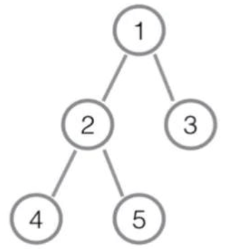
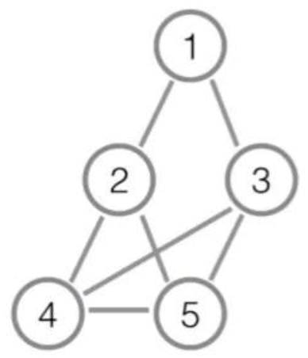

久莲是一个喜欢出题的女孩子。
在今年的 World Final 结束以后，久莲特别喜欢计算几何，于是她打算在 NOI 的考场上也出一个计算几何：这是一道只有题目名字和计算几何相关的题目。
首先，久莲给出了一棵$n(n≥2)$个节点的有根树 T，根节点编号为1。定义叶子节点为除了根以外所有度数恰好为1的节点。下图是一个树 T 的例子，其中叶子节点集合为{3,4,5}。

接着通过这棵树，久莲构造了一个序列A：
- 从根节点开始深度优先遍历整棵树，遍历时按照编号从小到大的顺序来访问孩子，这样可以得到一个树T的 DFS 序。
- 接着按照在 DFS 序中的出现顺序从前往后，久莲把所有叶子节点排成一排得到了一个序列A。
更进一步地，通过序列 A，久莲定义了两个叶子节点$u,v$的距离$d(u,v)$：假设$u$在A中是第$i$个元素，$v$是第$j$个元素，则$d(u,v)=min(∣i−j∣,∣A∣−∣i−j∣)$。其中$∣A∣$为序列的长度，即T的叶子个数，$i,j$指的是出现的位置，从1开始计数。
上面的例子中，序列A为$[4,5,3]$，其中$d(3,5)=d(3,4)=d(4,5)=1$，3,4,5的出现位置分别为3,1,2。
最后，久莲给出了一个参数K，利用这棵有根树T和序列A，我们可以构造一张n个点的无重边无自环的无向图G：两个不同的点$u,v$之间有边当且仅当它们满足下列条件中的至少一个：
- 在树T中存在连接$u,v$的边。
- 在树T中$u,v$都是叶子节点且$d(u,v)≤K$。
当K=1或2时，上面的例子得到的图G都如下图所示：

现在久莲想让你来计算一下G中不同的哈密尔顿回路数量有多少条，答案可能很大，请对998244353取模后输出。
下面是一些补充定义：
- 无重边无自环的无向图G的一条哈密尔顿回路H是G中边的一个子集，其中每一个点恰好有两条不同的相邻边在H中，且任意两个点都可以通过H中的边直接或间接到达。
- 无重边无自环的无向图G的两条哈密尔顿回路$H_1,H_2$是不同的当且仅当存在一条边e使得e在$H_1$中且不在$H_2$中。
 Comet OJ
Comet OJ